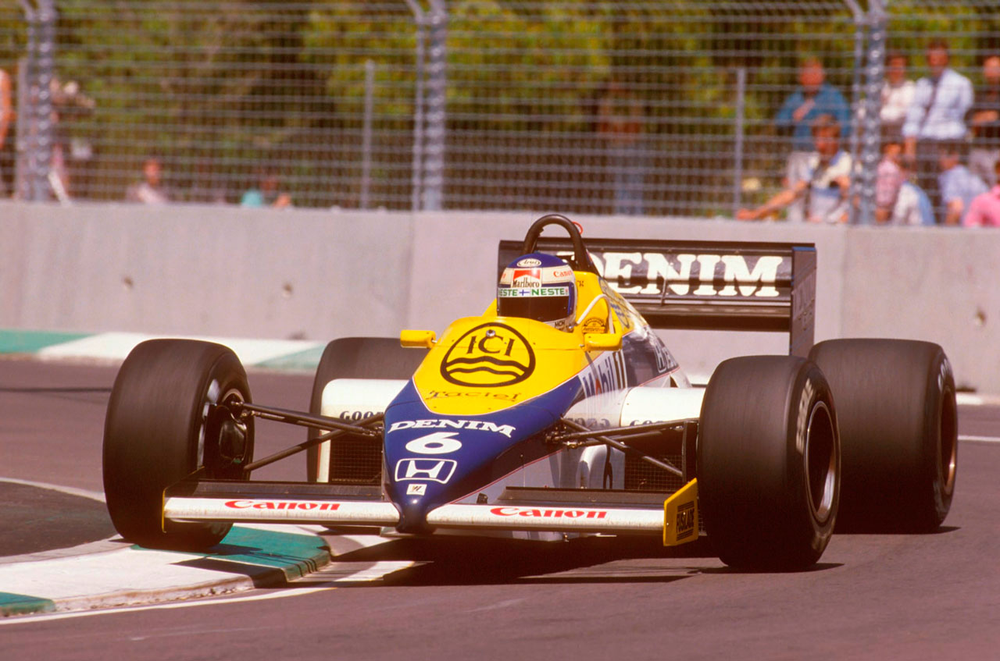
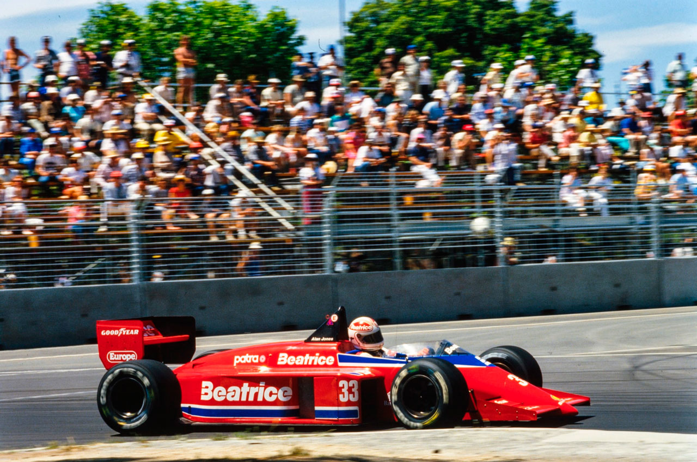
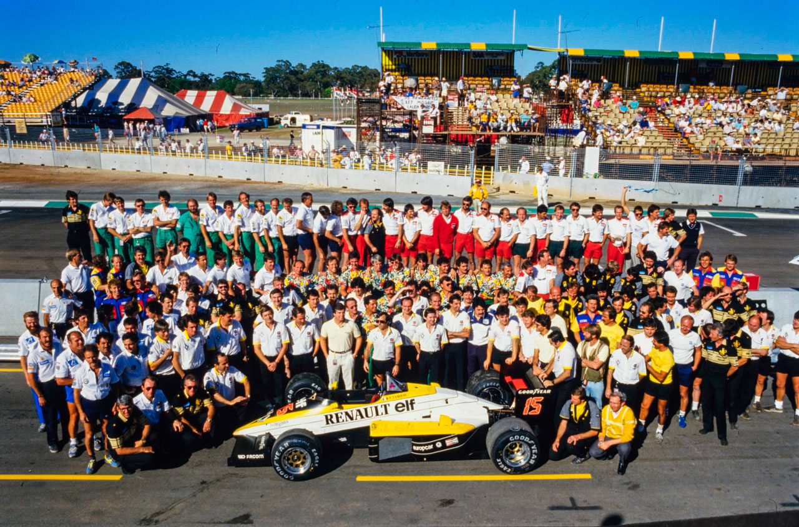
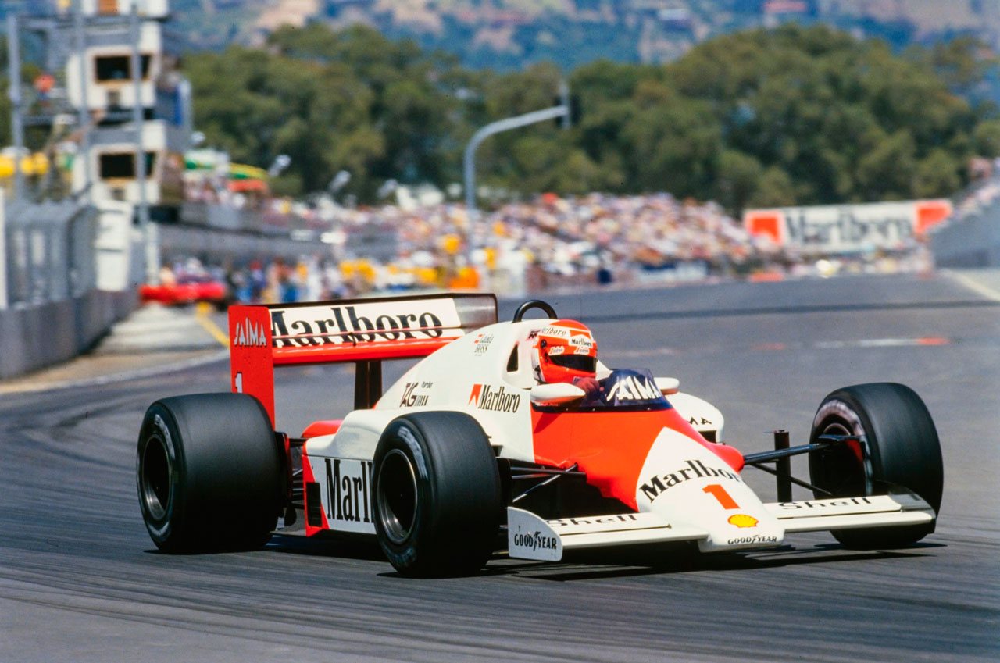
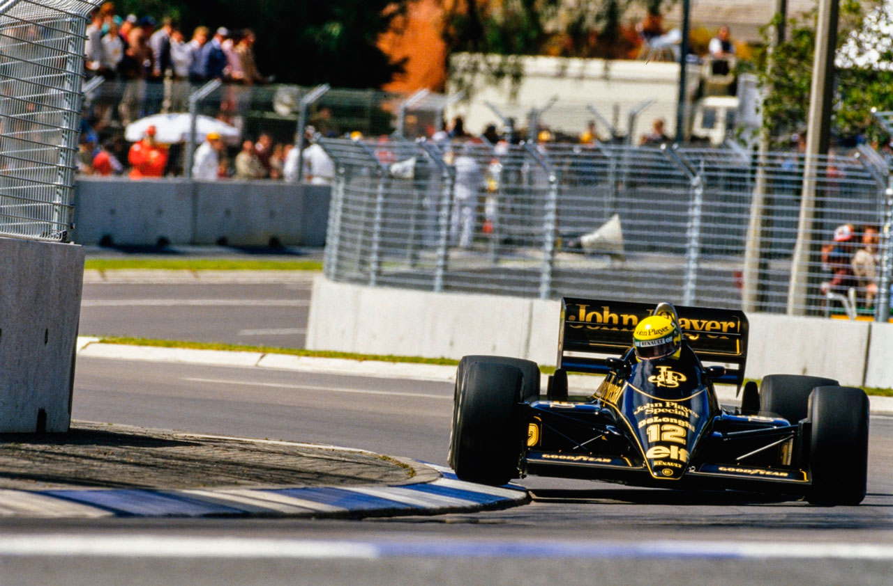
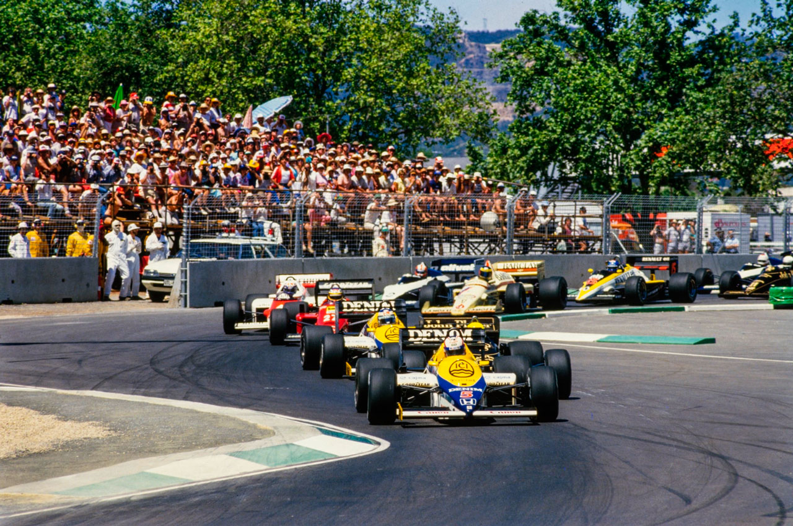
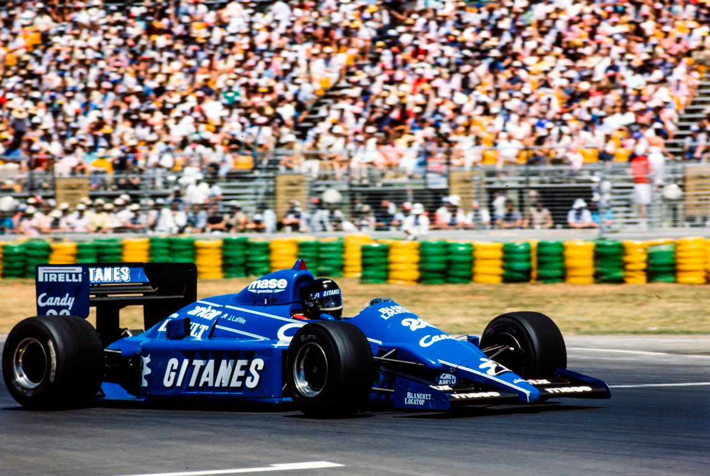
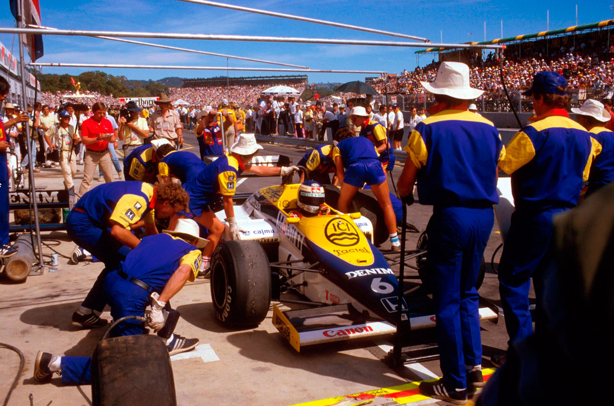
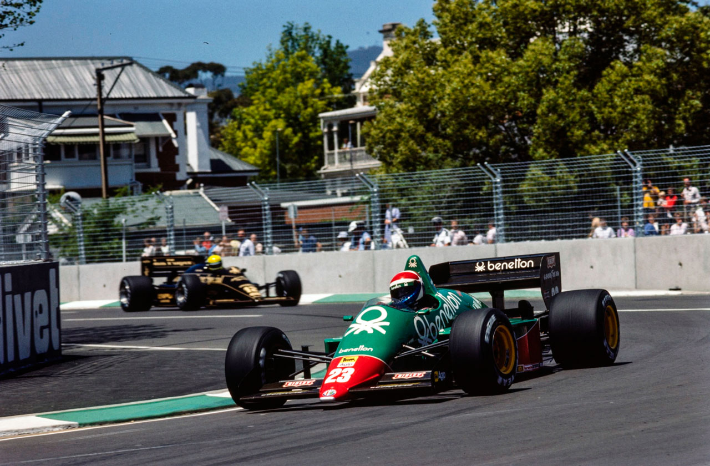
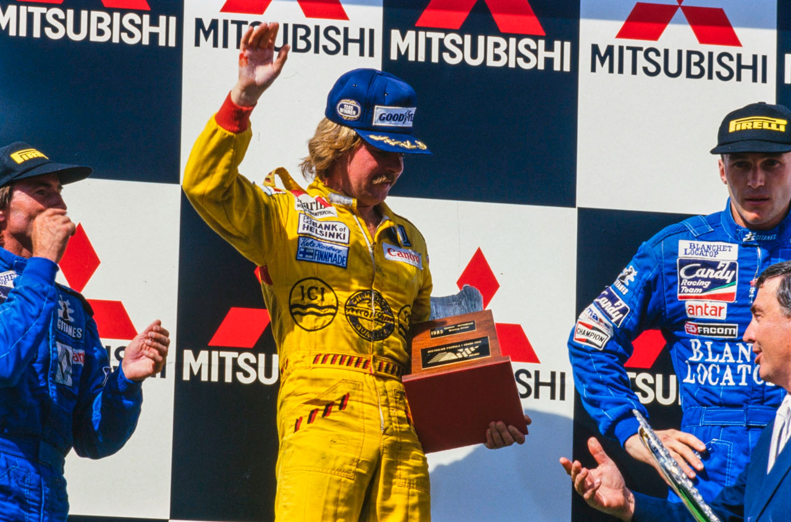

Adelaide - 03/11/1985
ÚLTIMAS LEMBRANÇAS DE 85

A primeira corrida da Fórmula 1 na Austrália encanta fãs e pilotos e, um duelo de Ayrton Senna com as Williams que encerrou a temporada de Fórmula 1. Uma briga que terminou a vinte voltas do final: marcando um momento histórico para o automobilismo australiano.
[AUTOR AQUI]
'Adeus inocente Adelaide, olá cidade internacional!' bradavam as manchetes de um jornal australiano na manhã seguinte à brilhante vitória de Keke Rosberg no primeiro Grande Prêmio da Austrália. A última etapa do Campeonato Mundial aconteceu em um país novo na trilha do título, mas mergulhado em história e tradição automobilística. A maioria dos entusiastas acreditava que o lugar da Austrália no calendário internacional da F1 já era muito aguardado, mas valeu a pena esperar. Realizada em um circuito soberbamente concebido nos subúrbios de Adelaide, a organização da corrida esteve à altura dos eventos estabelecidos e constrangendo seriamente muitos outros. O Circuito de Victoria Park, com 3,77 quilômetros de extensão, percorrendo parques, ruas da cidade e parte do autódromo de corridas de cavalos, foi o pano de fundo para uma das melhores corridas da temporada, com o Williams FW10B de Rosberg lutando durante grande parte da distância com o Lotus 97T de Ayrton Senna, vencedor da pole position. Ambos sobreviveram a paradas nos boxes para troca de pneus, saídas da pista e até mesmo uma pequena colisão entre eles. Rosberg teve vantagem durante grande parte da disputa, enquanto Senna demonstrava um comportamento notavelmente errático ao lidar com freios de fibra de carbono desgastados e pneus gastos. O brasileiro acabou se aposentando com uma falha grave no motor após três espetaculares saídas de pista. O tricampeão mundial aposentado Niki Lauda brevemente colocou seu McLaren MP4/2B na liderança para celebrar sua despedida do campeonato, mas a possibilidade de uma vitória sensacional na última corrida evaporou quando problemas nos freios traseiros o enviaram de cabeça para a parede de contenção, então o dia foi sem dúvida para Rosberg. O grande improvisador do circuito de rua adicionou a vitória em Adelaide às suas conquistas anteriores em ambientes semelhantes em Mônaco, Dallas e Detroit nas últimas temporadas. Ele abriu uma vantagem de uma volta completa sobre o Ligier JS25 de Jacques Laffite antes de permitir-se o luxo de uma terceira parada nos boxes nas últimas fases da corrida, cruzando a linha de chegada facilmente à frente de seu ex-companheiro de equipe e encerrando sua carreira na Williams em grande estilo.

OS TREINOS
Nunca uma corrida foi tão aguardada com tantas dúvidas - e, no dia, foi recebida com tantos elogios internacionais sem reservas. Uma viagem para o outro lado do mundo geralmente não era considerada uma prioridade para o mecânico médio da Fórmula 1 no final de uma temporada exaustiva que havia começado no Brasil sete meses antes. O governo da Austrália do Sul realmente fez um grande esforço em termos de promoção e organização de seu primeiro Grande Prêmio, mas a menção de "um novo circuito de rua" durante a temporada foi suficiente para causar preocupação entre os competidores que se lembravam do fiasco de Dallas no verão de 1984. A sabedoria de realizar corridas de Grande Prêmio em circuitos totalmente novos, sem nenhum tipo de corrida preparatória, parecia, à primeira vista, um jogo pesado contra as probabilidades. Felizmente, os pessimistas foram completamente desmentidos em suas previsões. Este foi um grande projeto destinado a colocar a Austrália do Sul no mapa. O primeiro-ministro John Bannon conseguiu obter um bom apoio financeiro para o projeto, e o evento até atraiu o patrocínio do primeiro-ministro do país, Bob Hawke. Em termos de exposição midiática, Adelaide estava sendo firmemente colocada no mapa do país em um momento em que competia com muitos outros destinos internacionais concorrentes. Todo o circuito, juntamente com suas excelentes instalações, foi concluído em tempo hábil antes do evento, surpreendendo aqueles que se lembravam do primeiro ano em Long Beach, Detroit e o único ano em Dallas. "A impressão não é a de um circuito de rua, porque, com condições de trabalho como essas, são melhores do que temos em praticamente qualquer lugar", explicou Keke Rosberg candidamente. "Como instalação, este tem que ser o melhor circuito de rua que já vimos. Este é um ambiente natural para uma corrida de Fórmula 1." Mais tarde, durante o fim de semana, questionaram Rosberg sobre seus elogios a Adelaide: ele estava apenas sendo educado na frente dos moradores locais, perguntaram a ele? "Acredite em mim", ele respondeu, "a fraternidade da Fórmula 1 é uma das mais mal-educadas do mundo. Se achássemos que era ruim, não se preocupe - teríamos dito. Mas achamos que é o melhor..."
Com a temperatura consistentemente próxima dos 90°F ao longo dos quatro dias do evento, acompanhada de céu azul e sem nuvens, o clima da primavera australiana foi muito bem recebido pela fraternidade europeia do automobilismo, buscando abrigo do início do outono no Hemisfério Norte. A superfície da pista estava extremamente escorregadia desde o início e não demorou muito para que muitos competidores descobrissem que um par de pneus traseiros de corrida duraria tanto quanto três jogos de pneus dianteiros de classificação. Esse total de oito jogos de pneus não apenas foi um método engenhoso para usar o número máximo de jogos permitidos por sessão, mas também uma forma de equilibrar o desgaste dos pneus em uma pista onde, com compostos iguais, os pneus dianteiros tendiam a funcionar antes dos traseiros atingirem a temperatura ideal.
Uma sessão de familiarização não cronometrada na tarde de quinta-feira viu Senna estabelecer o ritmo na faixa dos 1m 24s, mas foi Keke Rosberg quem conquistou a pole position provisória no final da primeira hora de classificação oficial na tarde seguinte. As velocidades de volta estavam se mostrando algo incertas na sexta-feira, pois a pista parecia lenta, com aderência mínima no início da sessão da manhã, acelerava no final dos 90 minutos e, após uma corrida de carros históricos durante o intervalo do almoço, a pista perdia aderência novamente no início da primeira classificação. Assim, aqueles que fizeram suas voltas mais tarde tendiam a ser os mais rápidos.

Durante a maior parte da primeira classificação, Nigel Mansell liderou as tabelas de tempos, com um tempo de 1m22.564s, usando pneus qualificatórios do composto E, mantendo sua vantagem quase até o final da sessão, quando seu companheiro de equipe e Senna superaram esse tempo nos momentos finais.
A sessão de sábado à tarde seguiu a mesma linha, com Senna lançando um desafio sólido ao marcar 1m 21.053s, seguido imediatamente por Mansell, que registrou 1m20.537s. Ayrton claramente não estava disposto a deixar as coisas por aí, e o brasileiro respondeu com impressionantes 1m19.843s, incríveis 0.7s mais rápido do que o vencedor de Brands Hatch e Kyalami, que estava ao seu lado na fila. "Foi muito difícil manter a trajetória hoje", refletiu ele. "Era como dirigir em rolamentos de esferas ou no gelo. Na verdade, não me lembro muito, pois minha melhor volta foi tão rápida!"
Mansell teve uma de suas voltas arruinadas no sábado depois que o Arrows A8 de Thierry Boutsen passou voando por sua Williams ao entrar na chicane imediatamente após os boxes, saltando sobre o ápice arenoso e quase acertando o FW10B enquanto voltava para a pista. Mansell escapou por pouco de se envolver nesse incidente, mas Boutsen duplicou a manobra na volta seguinte, refletindo o fato de que os freios traseiros do A8 estavam apresentando sérios problemas. Como resultado, a melhor volta de Mansell no sábado e sua segunda posição no grid foram obtidas com um jogo de pneus macios do composto C, enquanto Senna e Rosberg fizeram seus melhores tempos com pneus qualificatórios do composto E. Keke ficou em terceiro no grid, registrando 1m 21.887s. "Ok, talvez eu tenha sido superado. Talvez devesse ter seguido Nigel na escolha dos pneus. Pareceu funcionar bem para Senna, mas não funcionou tão bem para mim. Mas devemos estar em boa forma quando a corrida começar..." Alain Prost utilizou um par de pneus traseiros de corrida e três jogos de pneus dianteiros qualificatórios. O novo Campeão Mundial teve que lidar com um pneu traseiro cortado durante toda a sessão após rodar em sua primeira volta. Prost parecia incomumente instável e o McLaren era um desafio, então qualificar em quarto com 1m 21.889s foi, nas circunstâncias, uma performance absolutamente excepcional. Niki Lauda descobriu que seus pneus demoravam cinco ou seis voltas para aquecer na sexta-feira, dificultando seus esforços para melhorar seu tempo de 24.691s, o 13º mais rápido no primeiro dia. No sábado, ele permaneceu no carro reserva durante a classificação depois de enfrentar problemas elétricos sérios durante a sessão não cronometrada da manhã. Ele melhorou para 23.941s, mas caiu três posições no grid geral e saiu bastante desanimado. No acampamento da Ferrari, a equipe estava experimentando aletas traseiras aerodinâmicas revisadas, bem como turbos redesenhados que foram testados pela primeira vez no carro de Stefan Johansson na sexta-feira. Stefan trocou para o carro reserva após a primeira sessão não cronometrada, simplesmente "porque se sentia melhor", e ambos os carros da Ferrari foram equipados com os turbos revisados para proporcionar uma melhor resposta em altas velocidades, a tempo da classificação de sábado. Eles ajudaram Michele Alboreto, muito mais feliz do que antes, a alcançar o quinto tempo mais rápido, com 22.337s, mas Stefan teve um momento miserável, reclamando que seus problemas de aderência pareciam mais sérios do que a maioria. "Tive que reduzir a pressão do turbo na tentativa de obter tração, mas as rodas traseiras ainda estavam patinando na quinta marcha", refletiu Stefan: "realmente decepcionante".
Reduzir a pressão do turbo na tentativa de obter mais aderência foi um método utilizado por Nelson Piquet na sexta-feira, quando o brasileiro marcou o quarto tempo mais rápido, com 23.018s. Ele conseguiu esse tempo com um conjunto de pneus usados, porém sofreu com uma falha irregular no sábado causada por uma borboleta presa no sistema de indução. Quando a equipe identificou o problema exato, Nelson já havia usado todos os seus pneus, então a troca para o carro reserva não foi muito útil. Embora ele tenha melhorado seu tempo para 22.718s, ele acabou caindo para o nono lugar no grid final.

Marc Surer continuou impressionando no outro carro da Brabham, o amigável suíço alinhando-se em sexto com 22.561s, apesar de ter entrado nos boxes cinco vezes durante a sessão final para verificar um aparente problema de contato com o solo, que acabou sendo as asas dianteiras colapsadas tocando o chão em alta velocidade. Os companheiros de equipe que utilizavam motores BMW, Arrows, pareciam estar sofrendo uma série interminável de pequenas tribulações; a especulação lamentosa de Alan Rees na sexta-feira, "não pode piorar", mostrou-se tristemente otimista. Na sexta-feira de manhã, o A8 de Boutsen parou na pista com uma falha na unidade de medição e, até que o carro fosse recuperado e o problema diagnosticado, não havia tempo suficiente para consertá-lo antes da primeira classificação. Enquanto isso, o carro de Gerhard Berger havia quebrado a caixa de câmbio, então os dois pilotos tiveram que compartilhar o carro reparado de Berger no final da sessão.
Em seguida, na manhã de sábado, o carro de Berger teve uma junta de cabeçote estourada e o de Boutsen apresentou falhas, então ambos os motores BMW tiveram que ser trocados para a classificação final. Gerhard fez um trabalho espetacularmente irregular, incluindo uma rodada, para se qualificar em sétimo com 22.592s, enquanto Boutsen, enfrentando os problemas de freio mencionados anteriormente, marcou 23.196s, ficando em 11º lugar no grid.
A falta de potência (a sério!) na superfície escorregadia da pista permitiu que os Alfa 184TBs de Cheever e Patrese aproveitassem a boa dirigibilidade de seus chassis com o mínimo de patinagem na sexta-feira, mas com a pista oferecendo mais aderência na tarde seguinte, eles caíram para o 13º e 14º lugares, atrás do problemático Renault RE60B de Derek Warwick e da Ferrari de Johansson. A equipe Renault, aliás, exalava a atmosfera de um velório em sua última participação na F1. Patrick Tambay optou pelo carro reserva no início dos trabalhos (pois sentiu que ele se comportava significativamente melhor do que seu carro de corrida designado) e provou isso ao se classificar em oitavo com 22.683s, 0.8s - quatro lugares à frente do desconsolado inglês. No box da Tyrrell, houve uma séria escassez de caixas de câmbio na manhã de sábado, depois que Martin bateu quando saía da trajetória enquanto Piquet saía dos boxes à sua frente durante a primeira classificação. "Bloqueei uma roda e lá fui eu", disse Brundle, encolhendo os ombros. Ivan Capelli já havia batido um carro na quinta-feira à tarde, então, após o acidente de Martin, a equipe ficou apenas com duas caixas de câmbio em condições de uso para o restante do fim de semana. Apenas para garantir, Capelli não foi autorizado a treinar no sábado, e Martin marcou um tempo final de 1m24.241s, "que foi mais de meio segundo mais lento do que eu pensava que poderíamos conseguir", disse um Martin descontente. "Foi a mesma história de sempre - falta de tração". Nenhum dos pilotos da Ligier JS25 parecia conseguir se destacar em Adelaide, a segunda sessão de classificação de Philippe Streiff foi arruinada por problemas elétricos que o deixaram parado na pista e ele teve que usar o carro reserva equipado com o motor EF15. Ele se classificou em 18º, enquanto Jacques Laffite ficou em 20º, com os dois carros franceses separados pelo Beatrice Lola THL-1 de Alan Jones. Claramente, A.J. esperava por resultados melhores em casa, e o subesterço do Lola foi reduzido com a instalação de uma asa dianteira maior. Ele eventualmente marcou um tempo de 24.369s, "tirando mais do carro do que ele tem para oferecer", refletiu um pensativo Carl Haas. Jones sofreu uma série de problemas no motor Hart, assim como os Toleman TG185s de Teo Fabi e Piercarlo Ghinzani. No entanto, o problema constante dos Tolemans era a falta de aderência dos pneus Pirelli, e eles se classificaram no fim do grid, junto com Capelli, o Minardi de Pierluigi Martini e o único Osella-Alfa de Huub Rothengatter.

A corrida
Quando Senna liderou o pelotão na volta de apresentação em direção à grade final, no calor da tarde de domingo, todos os assentos estavam vendidos e Adelaide até testemunhou a cena improvável de cambistas rondando os portões oferecendo dinheiro por ingressos de entrada sobressalentes! No entanto, era pouco provável que alguém com um ingresso fosse perder a oportunidade de comparecer ao que era, sem dúvida, o evento esportivo do ano em Adelaide... Finalmente, após um ano de planejamento e organização, os fãs australianos puderam desfrutar da conclusão gloriosa enquanto Derek Ongaro, da FISA, acionava o botão para acender as luzes de largada e Nigel Mansell disparava da primeira fila para liderar o grupo agitado rumo à primeira chicane. Alan Jones engasgou seu Beatrice Lola e precisou ser empurrado para pegar no tranco após a partida do pelotão, mas todos os outros conseguiram passar pela primeira curva sem contato indesejado. Mansell liderava a subida com o Lotus de Senna colado em sua caixa de câmbio Williams. Na metade da primeira volta, o brasileiro decidiu mergulhar por dentro de Mansell em uma trajetória absurdamente apertada, enquanto os dois carros entravam em uma curva de 90 graus à esquerda. Senna forçou o Williams a sair da pista de forma desordeira. Senna alegou que Mansell havia tentado acompanhá-lo por fora onde não havia espaço suficiente, enquanto um Nigel furioso chamou seu rival de "idiota" por uma manobra tão extravagante logo no início da corrida. Mesmo que Senna estivesse tecnicamente certo, foi uma manobra tola de executar com tanques cheios nos primeiros momentos agitados de um Grande Prêmio, e não seria a única manobra desse tipo que Senna realizaria durante a intensa tarde de corrida! Mansell seguiu para os boxes e, eventualmente, abandonou a prova após uma volta adicional, com três dentes arrancados da coroa do Williams. Suprimindo o desejo ardente de discutir o assunto com a equipe Lotus, Nigel engoliu o orgulho e deixou o circuito em direção ao hotel muito antes do final da corrida. Rosberg completou a primeira volta à frente de Senna, já abrindo uma vantagem em relação ao em boa fase Alboreto, seguido por Prost, Berger, Surer, Tambay, de Angelis, Piquet, Cheever, Boutsen e os demais. Esse seria o padrão nas primeiras etapas da corrida, com Keke controlando o ritmo e confiando no desempenho de seus discos de freio de ferro fundido nas condições extremamente quentes, em contraste com os discos de fibra de carbono usados por Senna e alguns outros pilotos.

Não demorou muito para que a superfície abrasiva cobrasse seu preço, já que muitos dos líderes começaram a apresentar sinais de desgaste e granulação dos pneus em poucas voltas. Mal o Alfa de Cheever expirou na sexta volta com falha no motor e o Tyrrell de Brundle foi lentamente aos solavancos com pouco mais de 2000 rpm depois que seus sistemas eletrônicos enlouqueceram, a área dos boxes ficou lotada com a primeira leva de pilotos em busca de pneus novos. Berger, cuja Arrows avançou confiantemente do quinto para o quarto lugar na sétima volta, caiu para sexto na nona volta, pois seus pneus perderam aderência e ele entrou para trocá-los na volta seguinte. Prost havia parado uma volta antes, enquanto no final da 12ª volta Tambay e ambos os carros da Ferrari sentiram que não poderiam esperar mais por pneus novos. Boutsen fez sua parada na 13ª volta, seguido por Warwick na 14ª volta. Ao mesmo tempo, um preocupado Piquet abandonou sua fumegante Brabham para sempre na pista. Um curto-circuito elétrico havia incendiado a bateria e, como a bateria do BT54 estava situada sob as pernas do piloto, ele estava bastante ansioso para se mover para um lugar seguro! Toda essa atividade inicial resultou em Lauda e Jones subindo para sexto e sétimo lugar, respectivamente, embora uma falha elétrica tenha prejudicado as chances de pontuação da Beatrice Lola exatamente quando Jones estava começando a se mostrar um candidato provável a pontos. Mas na liderança do pelotão, era Rosberg quem continuava ditando o ritmo, observando atentamente seu retrovisor para acompanhar o progresso de Senna, acelerando ligeiramente nas retas quando necessário, enquanto permitia que o Lotus se aproximasse o quanto Ayrton quisesse nas partes sinuosas onde não havia esperança de ultrapassagem.

De Angelis foi punido com a bandeira preta do quinto lugar, uma resposta tardia, 17 voltas depois da largada, por violar as regras ao "recuperar" sua posição original no grid após ser atrasado na volta de apresentação. Embora essa tenha sido uma penalidade justificada, consistentemente aplicada nos dias de hoje, isso levantou a questão de por que um piloto deve arriscar-se por 17 voltas antes de ser desclassificado. Ou ele infringiu as regras ou não infringiu. Um debate entre os comissários parecia ser um desperdício desnecessário de tempo. Na 18ª volta, Surer ultrapassou brevemente Prost, mas o piloto da McLaren retomou o terceiro lugar na 25ª volta antes de se aposentar algumas voltas depois com uma falha espetacular no motor. Isso colocou Surer de volta ao terceiro lugar, com Lauda em quarto, seguido por Alboreto e Philippe Streiff da Ligier. Na 26ª volta, Rosberg abriu uma vantagem de 9,8s sobre Senna, com o brasileiro agora cuidando dos seus pneus, mas Ayrton se firmou de volta na traseira do Williams, apesar de alguns momentos de pilotagem ousada ao passar pelas zebras embelezadas ao redor do circuito, um dos quais foi suficientemente espetacular para lançar o Lotus no ar como uma folha. No entanto, os chassis da Lotus eram muito resistentes e as reações rápidas de Senna estavam sempre à altura da tarefa de segurar os deslizes causados por sua própria pilotagem cada vez mais errática. Finalmente, na 42ª volta, Senna se superou.

Enquanto Rosberg diminuía repentinamente para entrar nos boxes em busca de pneus novos, o Lotus de Ayrton tocou a traseira do Williams, arrancando o aerofoil dianteiro direito contra a placa lateral da asa traseira do Williams. Na volta seguinte, em vez de desacelerar para entrar nos boxes, Ayrton se viu envolvido em uma derrapagem violenta de subesterço, que o levou a atravessar as zebras e ir parar na grama do lado de fora da pista, de onde ele retornou à pista do outro lado da curva. Na volta seguinte, ele entrou nos boxes para trocar os pneus, uma nova seção do bico e fazer uma limpeza geral nos dutos do radiador e intercooler. Enquanto isso, a corrida de Surer chegou ao fim quando seu motor falhou e não conseguiu ser reiniciado enquanto ele mancava de volta aos boxes com um pneu dianteiro esquerdo vazio após um breve toque com o Toleman de Ghinzani. Mais atrás no pelotão, o progresso de Boutsen foi interrompido quando uma linha de óleo se soltou, borrifando lubrificante nos pneus traseiros e causando uma rodada violenta. Ambos os carros da Renault quebraram com problemas no pinhão e coroa, a embreagem de Ghinzani falhou, e Jones admitiu a derrota com sua Lola falhando.
Na volta 46, a ordem era Rosberg, Lauda e Senna, mas Ayrton recuperou a segunda posição do campeão mundial em exercício na volta 50 e assumiu a liderança quando Keke parou para sua terceira troca de pneus três voltas depois. Uma porca de fixação da roda dianteira esquerda que travou custou quase meio minuto ao Williams, e à medida que a aderência dos pneus Goodyear de Senna diminuía novamente e seus freios perdiam eficiência, Lauda assumiu a liderança na volta 56. Parecia que teríamos um final de conto de fadas para a sua ilustre carreira. Infelizmente, o momento de glória de Niki foi breve. "Eu vinha tendo problemas com meus freios há umas 10 voltas", relatou Lauda após a corrida, "e estava tendo que pisar no pedal com muita força para obter alguma resposta. Ao frear para a curva à direita no final da reta mais longa, os freios traseiros travaram e foi o fim de tudo!" O McLaren de Lauda saiu suavemente da pista e colidiu com o muro de concreto no lado esquerdo do circuito, amassando a suspensão dianteira esquerda. Isso nos deixou efetivamente onde começamos, com Senna e Rosberg lutando ferocemente na frente do pelotão. Keke estava quase sete segundos atrás, mas já estava reduzindo a vantagem do brasileiro quando o motor do Lotus de repente expeliu a maior parte de um pistão para o coletor de admissão. Houve uma nuvem de fumaça azul e Senna diminuiu drasticamente a velocidade enquanto Rosberg o perseguia. Ele seguiu para os boxes para uma avaliação detalhada dos danos: após mais uma volta lenta, Ayrton abandonou definitivamente a corrida, e assim a vitória foi entregue a Rosberg em uma bandeja.

Não que ele não merecesse a vitória subsequente, é claro. Keke havia pilotado como um rei para conquistar sua segunda vitória da temporada, e a falta de alarde com a qual ele fez mais uma parada "preventiva" para um quarto jogo de pneus nas etapas finais refletia o nível de sua confiança implacável. Neste dia, nessas circunstâncias, ele havia sido imbatível. Laffite e Streiff brigaram intensamente para garantir o segundo e terceiro lugares para a Ligier, com Philippe "interpretando erroneamente" os sinais do pit da equipe como uma desculpa para desafiar Jacques de perto nas duas últimas voltas - muito de perto, como se viu, já que ele colidiu com Jacques no final da reta dos boxes e teve sorte de chegar aos boxes com a roda dianteira esquerda do seu JS25 prestes a se soltar. Em quarto lugar ficou o Tyrrell de Capelli, esse sósia de Dustin Hoffman mantendo-se longe de problemas, enquanto a Ferrari de Stefan Johansson superou a Arrows de Berger para completar os seis primeiros. A última chance da Ferrari de conquistar o Campeonato de Construtores terminou quando Alboreto perdeu a terceira posição pouco antes do final, devido a um parafuso que caiu da alavanca de troca de marchas do 156 dentro do cockpit. Assim, a McLaren conquistou o título de Construtores pelo segundo ano consecutivo, adicionando isso ao próprio feito de Alain Prost em 1985. Rosberg triunfou pela quinta vez em sua carreira no Campeonato Mundial de Fórmula 1. Mas os verdadeiros vencedores desta última corrida da temporada de 1985 foram os organizadores de Adelaide e a própria Austrália. Parabéns, pessoal!
